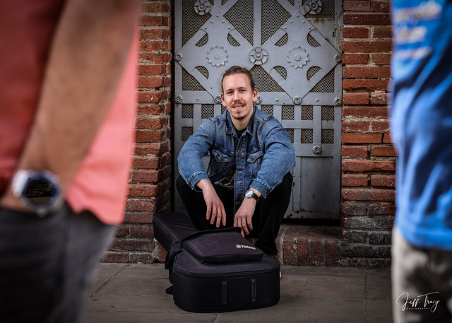
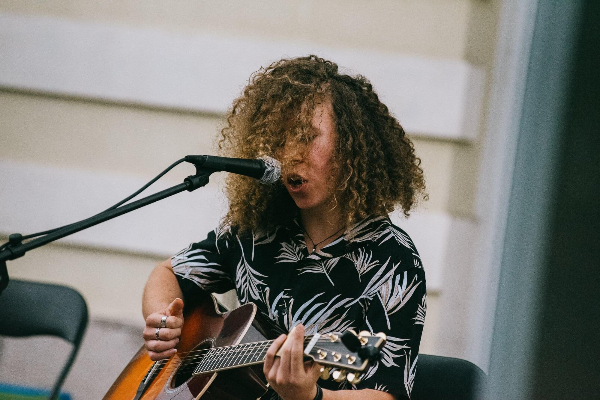
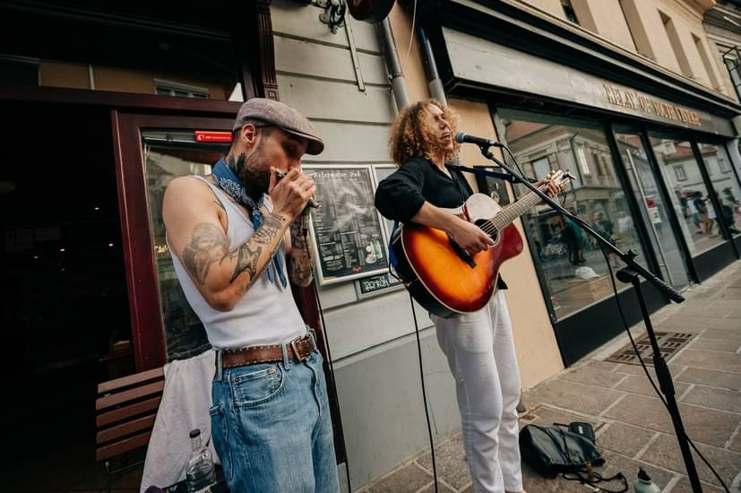

Gregor Kovač was born in 2001 in Ljubljana, Slovenia. He got interested in music
later than his peers, at around 12 years of age. Soon after he got into electronic music
production and produced several original tracks. Despite moving away from this genre,
these years were crucial for his musical knowledge, as they taught him the basics of
music theory and music production.
  
Photo: Jeff Tracy
Later, when he was 17 years old, he found a new interest in rock music, listening to artists like
Pink Floyd, The Beatles, and Queen. He started playing the piano at the same time, learning rock
classics by himself and experimenting with singing. At this time he also started to write his
own songs inspired by life and the musicians he was listening to at the time.
In 2020, he picked up the guitar for the first time and discovered that this was THE instrument for
him. The lockdown that followed gave him enough time to practice basic chords and melody lines, while
also improving his singing and writing songs. Later the same year he started listening to the blues more
intently. He learned his first blues songs from Eric Clapton's MTV Unplugged album, which he cites
to this day as one of his main entry points to the blues. In 2022 he played his first live show at Fete de la Musique
in Ljubljana, Slovenia, performing mostly folk and rock music, but also playing a few blues tunes,
for which he got a really good reception.
Photo: Lovro Megušar
As the years passed by, his love for the blues grew stronger. He started to listen to more traditional
artists like Robert Johnson, Muddy Waters, John Lee Hooker, R. L. Burnside, Skip James, and many others.
He improved his acoustic playing and also started to dabble with the electric guitar.
At this time his skill improved enough so that he could learn songs without tutorials, directly from the records.
In 2023 and 2024 he played two blues-only shows at Fete de la Musique.
In early 2025, Gregor teamed up with the harmonica player Rok Gazić to form an acoustic blues duo. Soon after
they performed live for the first time together at the harmonica festival Ah, Te Orglice..., and at
Fete de la Musique. They also did a few private shows and street performances, and played again at Ah, Te Orglice...
in early 2026. For the following years they have the plan to continue their collaboration, play more live
shows and record music together.
Photo: Lovro and Lenart Megušar
For the first half of 2026, Gregor moved to Barcelona, Spain, where he experienced an entirely different
culture surrounding music. He went to jams and open mics almost every week, becoming a regular visitor
at places like Dr. Flow, Harlem Jazz Club, and Craft, and also meeting
lots of great musicians. These few months were quite eye-opening for him, as he learned a lots of
valuable lessons about musicianship, live performance, and playing with other people.
Gregor's ambition for the future is to get even more deeply involved in the blues, improving his technique,
and learning from the greats. In the recent years he has officially started playing nothing but this genre,
becoming a sort of a blues purist. He is planning to release multiple original blues songs, some written
in the Slovenian language, which has rarely been done by other artists in the past. He also wants to play
as many Live Shows as he can, to spread the message of the blues and obtain some local recognition. He is also
on his way to establish an online identity, by uploading covers of traditional blues songs to Youtube.